I’m doing an introduction to IronPython presentation at the Victoria .Net user group tomorrow, I’ve been attending the user group for about a year and I’m pretty excited about presenting. I think python is a fantastic language and it’s great to be able to build software on the .Net framework with it.
| 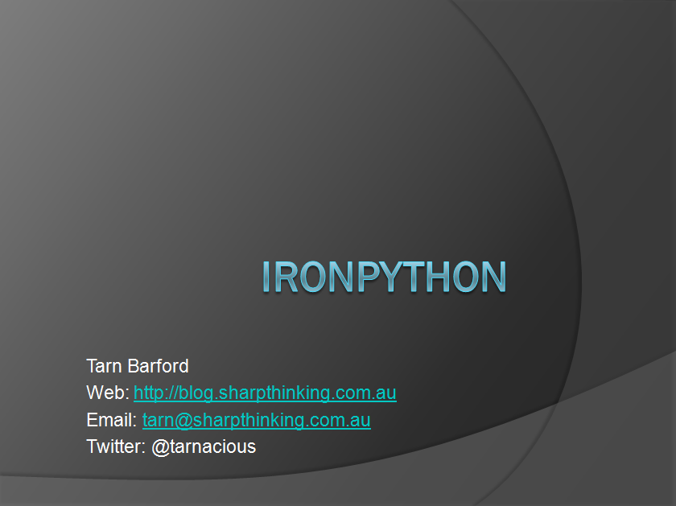 | IntroductionI wanted to start with the second slide and have a photo of a pub on the contact slide but decided to get through this before trying out PowerPoint jokes. |
| 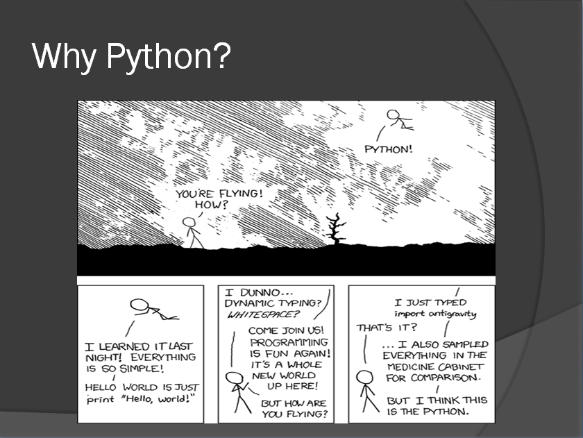 | Why PythonI just plan to discuss Why I started using Python. The cartoon is, of course, XKCD. |
| 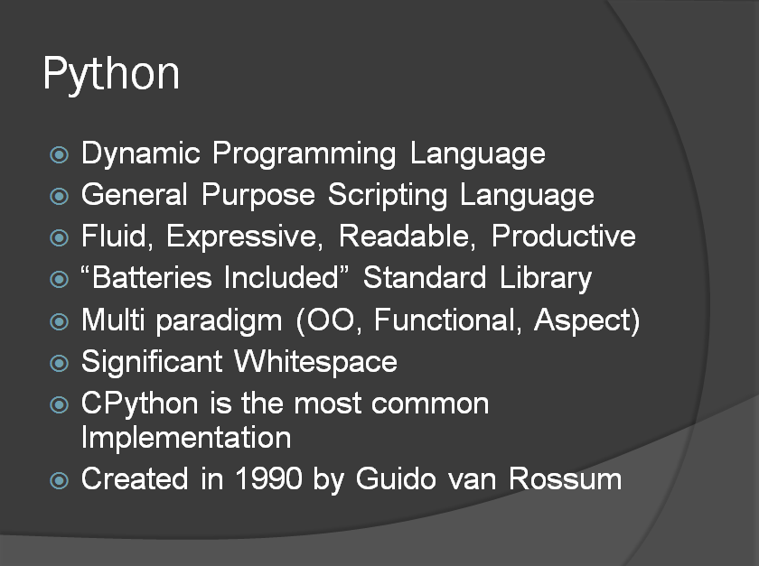 | PythonBasic information about the language and its background. Would have liked to have added meta programming or at least “..” to the paradigms.I think it’s a fantastic language so I’ll mention it’s expressive, fun, productive or whatever adjectives I’ve got in my head at the time. |
| 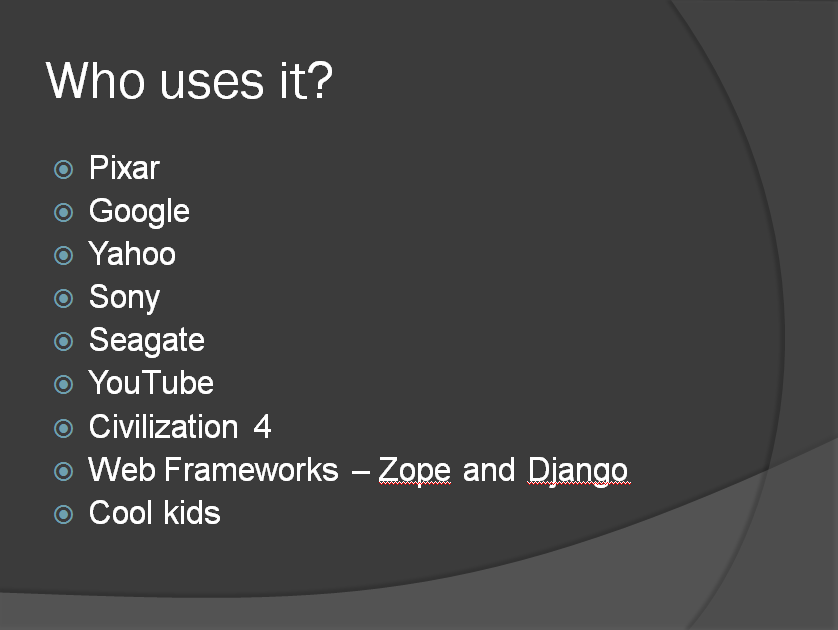 | People using PythonI really want to demonstrate that Python is real language, being used by real people, to write real code.I probably should also have mentioned Google App Engine here which I’ve been tinkering with a bit recently and think is pretty cool. |
| 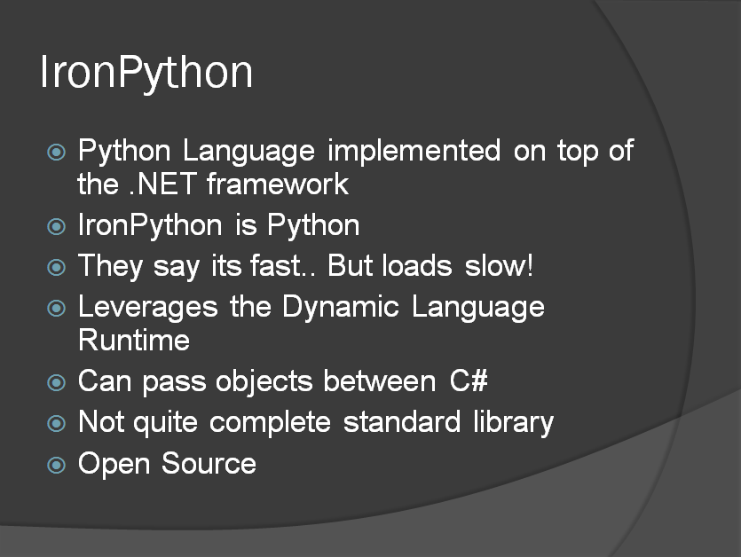 | IronPythonThe Python language on .Net. Most of the demo is doing cool stuff in .Net with the Python language. I think it goes further than this and allows developers to use their own paradigms and patterns to do .NET development. |
| 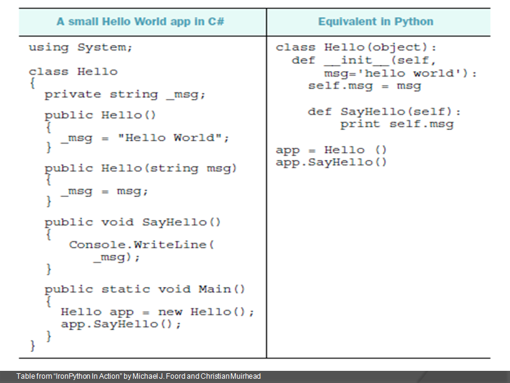 | C# and IronPython comparisonI saw this example in the awesome Iron Python in Action book. I included it as it’s a great introduction IronPython code, as it clearly and simply shows differences on similarities with C#. |
| 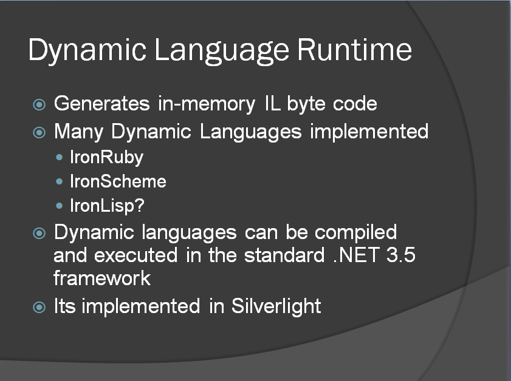 | Dynamic Language RuntimeThe Dynamic Language Runtime project is open source. Its quite well described here as: IronLisp has been superseded by the IronScheme project. |
| 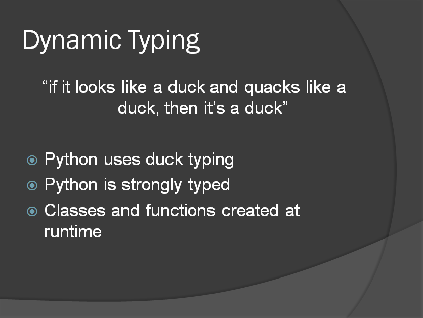 | Dynamic TypingThis slide is just a brief overview of what duck typing is. It is great for writing test objects, but I have a slide for the later.
|
| 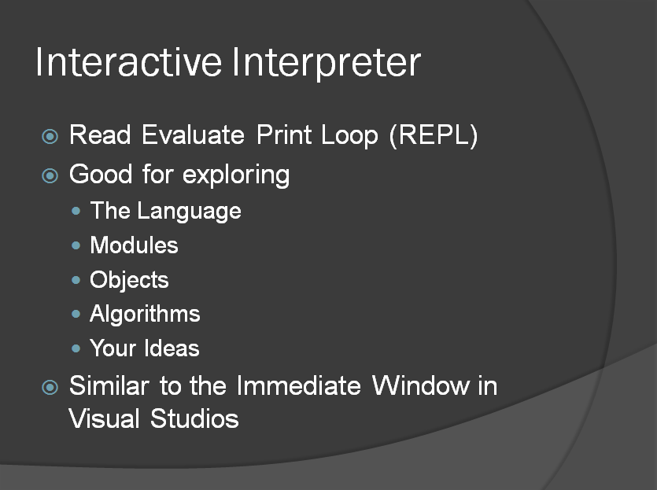 | Interactive InterpreterI think it’s awesomely cool, and I use it through the entire demo so I thought it might be worth warning people. |
The demo is a series of scripts run into the IronPython Interactive Console. I’ve uploaded the very small collection of scripts for this demo here.
Create a string, show how its methods can be reflected. Import the CLR and show how the .Net String methods are now available.
# Introduction to IronPython and the CLR # Standard first Python console command 2 + 2 # Create a string s = 'Hello IronPython' # Inspect its methods, note that its only Python methods. dir(s) # Python has a method to make the text uppercase s.upper() # Import the CLR import clr # Now look at the same objects methods, # We now see the .NET string methods! dir(s) # And can use them! s.ToUpper()
Create a WebClient object from the .Net framework to download an RSS feed. Use an xml2py module written by Harry Pierson to deserialise the RSS feed into an object graph. Then send the dates and titles to the Speech Synthesizer. I’ve seen this done before in an IronPython presentation, and just thought it was to much fun to leave out.
import clr # Create a WebClient and download a string of XML from System.Net import WebClient w = WebClient() xml = w.DownloadString('http://feeds.theage.com.au/rssheadlines/technology.xml') # Lets have a look at first 60 characters of the xml.. print xml[0:60] # If bad stuff happens in the presentation.. #xml = open('theage.rss').read() # Deserialize to objects using xml2py from devhawk import xml2py rss = xml2py.parseString(xml) # Print the results for post in rss.channel.item: print post.pubDate, post.title # Import Speech clr.AddReference('System.Speech') from System.Speech import * ss = Synthesis.SpeechSynthesizer() # Say titles and dates using the SpeechSynthesizer for post in rss.channel.item: s = "%s. %s." % (post.pubDate[:16], post.title) ss.SpeakAsync(s)
I really don’t want to do this in the presentation. I did spend a fair amount of time playing round with asynchronous SQL queries for use in a WPF application, but it seemed too complicated for the demo so I’ve left it out. I use
# import a simple wrapper around System.Data.SqlClient # the wrapper is on my blog, I just wanted to show the AdventureWorks # database, it seems a bit of .NET presentation tradition. from demo import sql # setup a query on the AdventureWords database query = 'SELECT * FROM Production.Product' sql.connection = 'Data Source=localhost\SQLEXPRESS;Initial Catalog=AdventureWorks;Integrated Security=SSPI;' # execute the query products = sql.SqlQuery(query) # print some results for p in products[:5]: print p.Name
I think there is some pretty cool stuff in this demo. Although it takes a lot more to write real applications it does open new ways to develop and test .Net applications.
# More pythonic way of getting the feed.. lets hope I have internet from devhawk import xml2py rss = xml2py.parse('http://feeds.theage.com.au/rssheadlines/technology.xml') # Importing avalon starts a new thread to run the WPF application # It sets up some dispatures so the console can talk to the GUI from samples import avalon # Create a window, show it and load some XAML into it w = avalon.Window() w.Show() xaml = avalon.LoadXaml('demo.xaml') w.Content = xaml # Loading names is really cool, it traverses the control tree # described in the XAML and creates a dictionary of names and # controls. We can add those dictionary items to the local scope, # so we get the same effect as a generated designer files in # Visual Studio. avalon.LoadNames(xaml,locals()) # We can bind a Python list of Python objects to the ListView listView.ItemsSource = rss.channel.item # Create a button click callback that will execute the script # in the query TextBox. def OnClick(*args): try: exec (query.Text) except: print "Script threw an exception" pass # Wire up the click event to our function execute.Click += OnClick # We can now execute this on the client listView.ItemsSource = [p for p in rss.channel.item if p.title.find('to') >= 0]
| 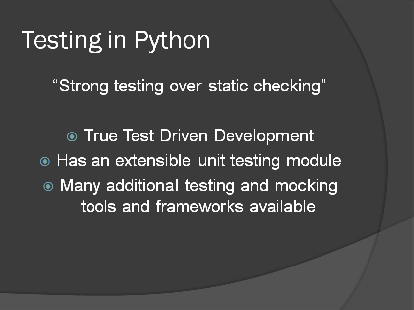 |
Testing in PythonIt’s really cool you can do true test driven development in that you can write unit tests for classes and methods that haven’t yet been written. Some cool GUI testing is also possible using some the stuff in this presentation. |
| 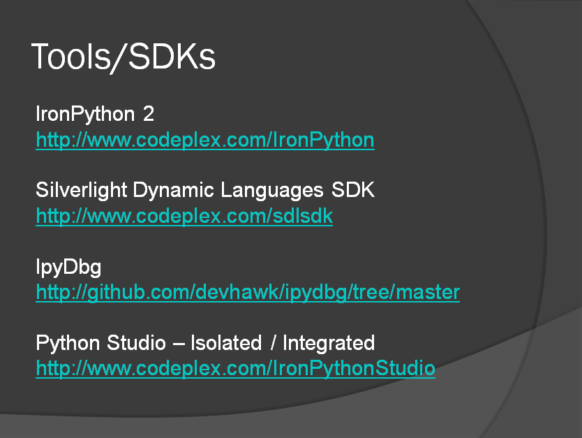 |
Tools / SDKsI’m not expecting to mention Python Studio or IpyDbg as I’ll probably be running out of time.I really should have included a link to python.org, I’ll make sure I mention it. You can get IronPython here and the Silverlight Dynamic Languages SDK |
| 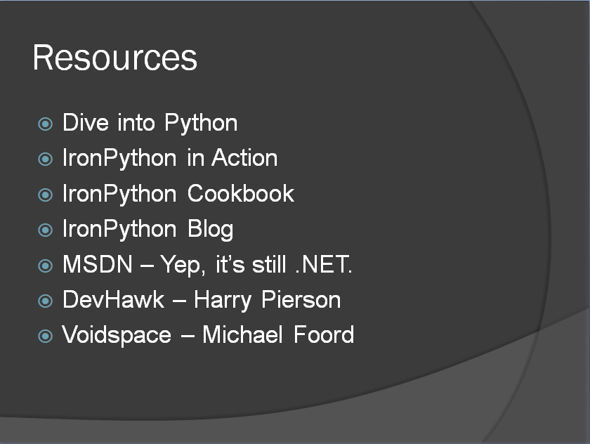 |
ResourcesDive Into Python – Free online, python for programmers.IronPython In Action – Python and everything .NET with TDD and MVC practices. IronPython Cookbook – Online collection of IronPython .Net scripts. IronPython Urls, MSDN, Devhawk – Harry Pierson, Program Manager at Microsoft. Voidspace – Michael Foord, Author IronPython in Action. |
|
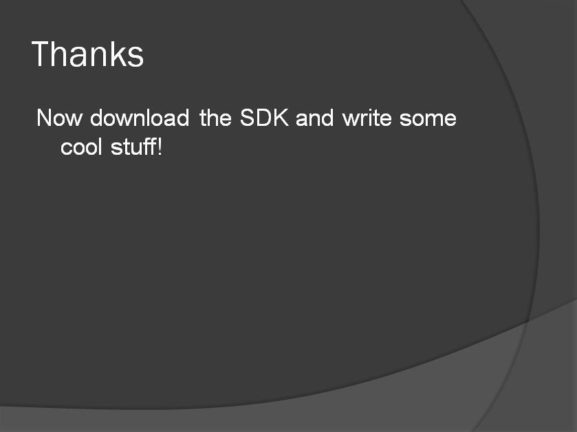 |
ThanksBy this stage I’ll almost certainly be running late, and probably be really worried about some minor disaster during the presentation. I hope it goes well and everyone takes something out of it, I look forward to hearing what you thought. |
{kind=link}